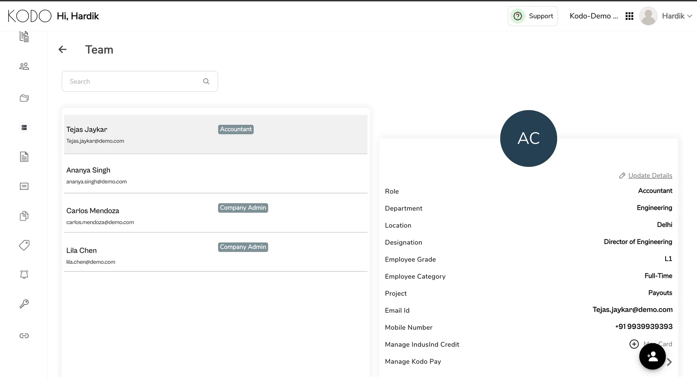
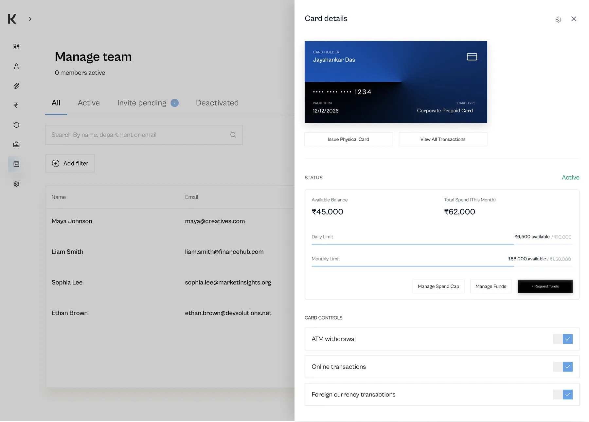
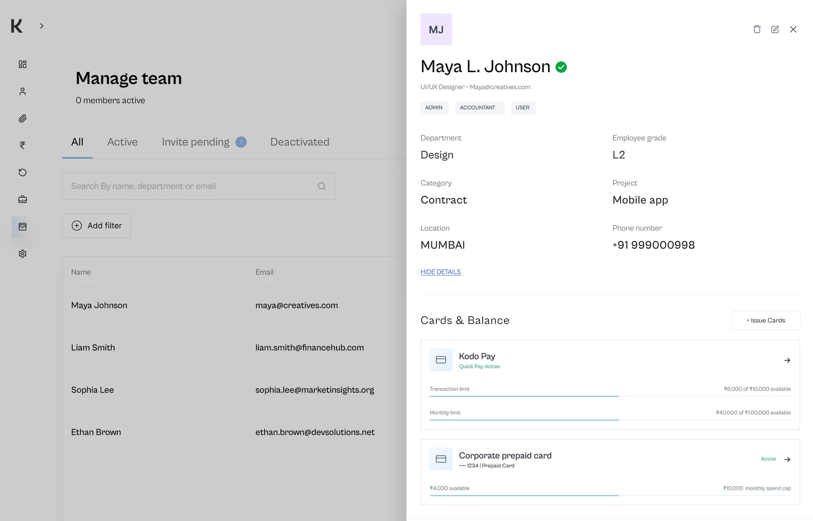

Identifying the Problem
The split view forced users to hold context in their head — the list and the detail panel competed for attention, cards weren't labelled clearly, and missing data simply showed blank space. Finance managers managing 50+ members had no scannable way to find who needed attention.

What We Made
We replaced the split view with a simple list → drill-down pattern built on progressive disclosure. The list gives you status and the essentials at a glance; clicking in reveals full detail in layers — cards, limits, transactions — each properly labelled with clear status indicators. Empty states now explain what's missing and what to do about it, instead of showing nothing.


Outcome
The member flow went from a screen the team worked around to one we lead with. Long-standing friction around card visibility resolved after release, and the list → drill-down pattern became the reference for similar views across the product. The qualitative shift was obvious within weeks.